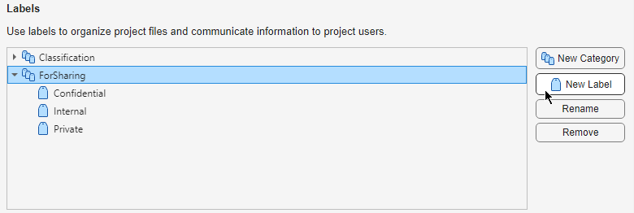

Manage Project Settings, Path, Labels, and Startup and Shutdown Tasks
When you open a project, MATLAB® adds the project path to the MATLAB search path and then runs or loads specified startup files. The project path and startup files help you set up the environment for your project. Similarly, when you close a project, MATLAB removes the project path from the MATLAB search path and runs specified shutdown files. Shutdown files help you clean up the environment for your project. Use shutdown files to undo the setup that occurs in startup files.
More specifically, when you open a project, MATLAB changes the current folder to the project startup folder, and runs
(.m and .p files) or loads
(.mat files) any specified startup files. For more information about
configuring the startup folder, see Specify Startup Folder.
The project settings, including path adjustments, labels, and shortcuts, are saved within the project file, ensuring that your environment is consistent each time you open the project.
Specify Project Details
You can edit the project name, add a description, or view the project root folder. On the Project tab, in the Environment section, click Settings. Then, in the Details section:
Edit the project name or add a description.
View the Project root folder. You can change your project root by moving your entire project on your file system, and reopening your project in its new location. All project file paths are stored as relative paths. To change the current working folder to your project root, click Set as Current Folder.
Specify Project Path
You can add or remove folders from the project path. Adding a project folder to the project path ensures that all users of the project can access the files within it.
To add a folder to the project path, on the Project tab, in the Environment section, click Settings. Then, in the Search Path section, click Add Folder and select the folder that you want to add. To add a folder and all of its subfolders, click Add with Subfolders instead.
To remove a folder from the project path, select the folder from the displayed list and click Remove.
You also can add or remove a folder from the Project panel. Right-click the folder and select Add to Project Path or Remove from Project Path.
Folders on the project path appear with the project path icon in the Status column in the Project panel.
Automate Startup and Shutdown Tasks
To configure files to automatically run on project startup and shutdown, on the Project tab, in the Environment section, click Settings. Then, in the Task Automation section, in the Startup files or Shutdown files pane, click Add and select a file in the browser.
To stop a file from running at startup or shutdown, select the file and click Remove. The files run from the top down. If the order in which the files run is important, use the Move Up and Move Down buttons to reorder the files.
Alternatively, in the Project panel, right-click a file and use the Run at Startup, Run at Shutdown, Remove from Startup, and Remove from Shutdown context menu options. The Status column in the Project panel displays an icon indicating whether the file runs at startup or shutdown.
You can specify additional Simulink® environment options to run on project startup and shutdown in the Simulink section of Project Settings.
To start Simulink when you open the project, select Start Simulink before opening this project.
To run
sl_customizationfiles on project startup and shutdown, select Refresh Simulink customizations after opening or closing this project.
Note
Startup and shutdown files are included when you commit modified files to source control. When you configure startup and shutdown files, they run for all other project users.
Startup files can have any name except startup.m. A file named
startup.m on the MATLAB path runs when you start MATLAB. If your startup.m file calls the project, an error
occurs because the project is not yet loaded. For more information about using
startup.m files, see Startup Options in MATLAB Startup File.
To create new startup and shutdown files programmatically, see addStartupFile and addShutdownFile.
Specify Startup Folder
When you open the project, the current working folder changes to the project startup folder. By default, the startup folder is set to the project root.
To edit the project startup folder, on the Project tab, in the Environment section, click Settings. Then, in the Startup Folder section, enter a path for the project startup folder.
Create and Manage Labels
All projects contain a built-in label category called Classification with several built-in labels. These built-in labels are read-only. You can create new labels in the built-in Classification category or create a new label category altogether.
You can use labels to organize files, label test files, and label files you want to
exclude when you share your project. For example, the Test label
enables you to easily identify your test suite and run tests easily on CI
servers.
To create your own label category, follow these steps:
In the Project Settings dialog box, in the Labels section, click New Category.
In the New Category dialog box, enter a name for the new category.
To specify a label data type other than the default
Nonedata type, from the Type list, select from the available options.If you want to attach only one label in the category to a file, select the Single-Valued option. If you want to attach multiple labels in the category to a file, select the Multi-Valued option instead.
Click OK.
To create your own labels in a label category, follow these steps:
In the Project Settings dialog box, in the Labels section, select the category you want to create a label in. Then, click New Label.

In the newly created label, type the new label name.

To rename or delete a category or label, in the Project Settings dialog box, in the Labels section, select the corresponding item and click Rename or Remove.
To create a new label or label category programmatically, see createLabel or createCategory.
For information on how to attach labels to files, see Add Labels to Project Files. For more information on how to use labels to identify test files or exclude files from a project before sharing, see Share Projects.
Create and Manage Custom Tasks
Custom tasks are MATLAB functions that allow you to perform a series of operations on one or more project files. You can create a custom task function and then run the custom task on a select set of files in your project. For example, you can create a custom task to check all the code files for errors or to run all the tests in the project.
To create a custom task function, you can use a new or existing function saved under the project root folder. On the Project tab, in the Environment section, click Settings. In the Custom Tasks section, follow these instructions.
To create a new task from an existing function saved under the project root folder, click Add Existing Function and select a file. In the Project Settings dialog box, click Apply.
To create a new function and add it as a new custom task, click Create New Function and follow these steps:
Specify a file name and save the new file under the project root folder. Then, click Apply.
The MATLAB Editor opens the new file containing an example custom task function.
Edit the function to perform the desired action on each file. Use the instructions at the top of the file to guide you to create a custom task with the correct function signature. Your custom tasks must accept a full path to a file as the single input argument and return a single output argument.
You can use the MATLAB Editor to set breakpoints and debug a custom task function, just as with any other MATLAB function.
After you finish editing the function, save the file.
For information on how to use custom tasks, see Run Custom Tasks on Project Files.
Specify Folders for Derived Files
You can specify folders to store derived files related to the currently open project. On the Project tab, in the Environment section, click Settings.
To specify or edit where to store the dependency cache file that the Dependency Analyzer app generates, in the Dependency Analyzer, edit Dependency cache file by clicking Browse.
By default, the dependency cache file (
.graphml) is stored in the preferences folder. You can create and specify a different cache file, for example,[project root]/dependencycache.graphml, or click Clear.Tip
Storing and sharing the dependency cache file helps you reduce test run time and dependency analysis run time. For more information, see Reduce Test Runtime Using Dependency Cache and Impact Analysis.
To specify or edit where to store the Simulink cache and code generation folder, set Simulation cache folder and Code generation folder by clicking Browse. For details, see Manage Build Process Folders (Simulink Coder).
See Also
addStartupFile | createLabel | createCategory